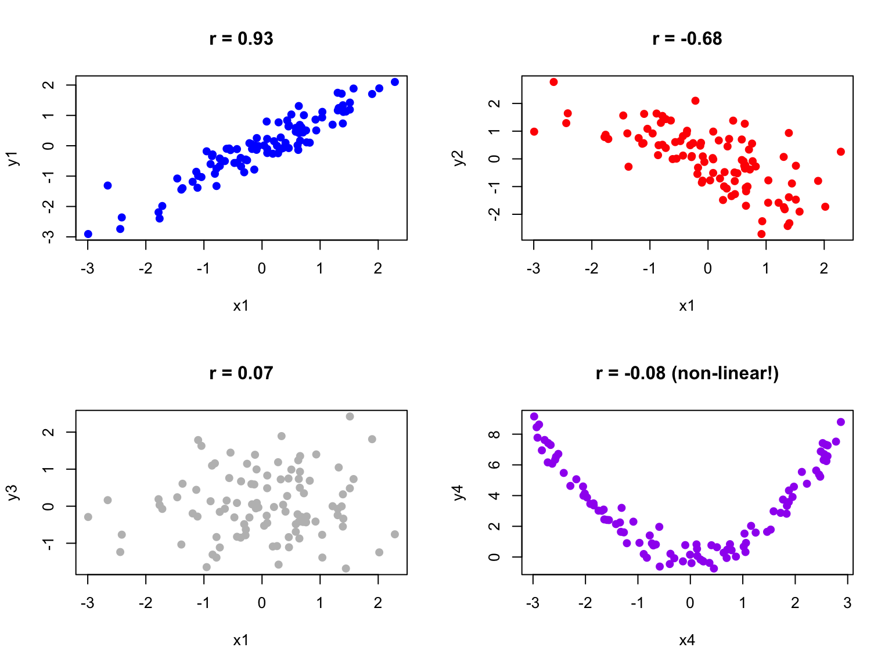

When two variables vary together, we say they are correlated. Understanding whether and how variables are related is fundamental to science—it helps us identify potential causal relationships, make predictions, and understand systems.
Correlation quantifies the strength and direction of the linear relationship between two variables. A positive correlation means that high values of one variable tend to occur with high values of the other. A negative correlation means that high values of one variable tend to occur with low values of the other.
16.2 Covariance
The covariance measures how two variables vary together. If X and Y tend to be above their means at the same time (and below their means at the same time), the covariance is positive. If one tends to be above its mean when the other is below, the covariance is negative.
When points cluster in the positive quadrants (upper-right and lower-left), the covariance is positive. When points cluster in the negative quadrants, the covariance is negative. When points are evenly distributed, covariance is near zero.
The problem with covariance is that its magnitude depends on the scales of X and Y, making it hard to interpret. Is a covariance of 100 strong or weak? It depends entirely on the units of measurement.
16.3 Pearson’s Correlation Coefficient
The Pearson correlation coefficient standardizes covariance by dividing by the product of the standard deviations:
# Examples of different correlationsset.seed(42)n <-100par(mfrow =c(2, 2))# Strong positivex1 <-rnorm(n)y1 <-0.9* x1 +rnorm(n, sd =0.4)plot(x1, y1, main =paste("r =", round(cor(x1, y1), 2)), pch =19, col ="blue")# Moderate negativey2 <--0.6* x1 +rnorm(n, sd =0.8)plot(x1, y2, main =paste("r =", round(cor(x1, y2), 2)), pch =19, col ="red")# No correlationy3 <-rnorm(n)plot(x1, y3, main =paste("r =", round(cor(x1, y3), 2)), pch =19, col ="gray")# Non-linear relationship (correlation misleading)x4 <-runif(n, -3, 3)y4 <- x4^2+rnorm(n, sd =0.5)plot(x4, y4, main =paste("r =", round(cor(x4, y4), 2), "(non-linear!)"), pch =19, col ="purple")

16.4 Anscombe’s Quartet
Francis Anscombe created a famous set of four datasets that all have nearly identical statistical properties—same means, variances, correlations, and regression lines—yet look completely different when plotted. This demonstrates why visualization is essential.
Always plot your data before calculating correlations. The correlation coefficient captures only linear relationships and can be misleading for non-linear patterns.
16.5 Testing Correlation
The cor.test() function tests whether a correlation is significantly different from zero:
Code
# Example: zebrafish length and weightset.seed(123)length <-rnorm(50, mean =2.5, sd =0.5)weight <-10* length^2+rnorm(50, sd =5)cor.test(length, weight)
Pearson's product-moment correlation
data: length and weight
t = 29.857, df = 48, p-value < 2.2e-16
alternative hypothesis: true correlation is not equal to 0
95 percent confidence interval:
0.9546054 0.9853063
sample estimates:
cor
0.974118
The null hypothesis is that the population correlation is zero (\(H_0: \rho = 0\)). A small p-value indicates evidence of a non-zero correlation.
16.6 Sample Correlation as a Random Variable
Just like the sample mean, the sample correlation coefficient is a random variable—it varies from sample to sample. If we could repeatedly draw samples from the same population and compute r for each, we would get a distribution of r values centered around the true population correlation \(\rho\).
This sampling variability has important implications for interpretation. A sample correlation of r = 0.3 from a small study might arise even when the true correlation is zero (or is actually 0.5). Understanding this uncertainty is essential for proper inference.
Code
# Demonstrate sampling variability of correlationset.seed(42)# True population parametersrho_true <-0.5# True population correlationn_small <-20n_large <-100n_reps <-1000# Function to generate correlated datagenerate_correlated_data <-function(n, rho) { x <-rnorm(n) y <- rho * x +sqrt(1- rho^2) *rnorm(n)return(cor(x, y))}# Generate sampling distributions for different sample sizesr_small <-replicate(n_reps, generate_correlated_data(n_small, rho_true))r_large <-replicate(n_reps, generate_correlated_data(n_large, rho_true))# Plot sampling distributionspar(mfrow =c(1, 2))hist(r_small, breaks =30, col ="lightblue",main =paste("Sampling Distribution of r\n(n =", n_small, ")"),xlab ="Sample Correlation", xlim =c(-0.2, 1))abline(v = rho_true, col ="red", lwd =2, lty =2)abline(v =mean(r_small), col ="blue", lwd =2)legend("topleft", legend =c(paste("True ρ =", rho_true),paste("Mean r =", round(mean(r_small), 3))),col =c("red", "blue"), lty =c(2, 1), lwd =2, cex =0.8)hist(r_large, breaks =30, col ="lightgreen",main =paste("Sampling Distribution of r\n(n =", n_large, ")"),xlab ="Sample Correlation", xlim =c(-0.2, 1))abline(v = rho_true, col ="red", lwd =2, lty =2)abline(v =mean(r_large), col ="blue", lwd =2)legend("topleft", legend =c(paste("True ρ =", rho_true),paste("Mean r =", round(mean(r_large), 3))),col =c("red", "blue"), lty =c(2, 1), lwd =2, cex =0.8)
Notice the dramatic difference in variability. With n = 20, sample correlations range widely around the true value—sometimes even appearing negative when the true correlation is 0.5! With n = 100, the distribution is much tighter, and our sample r is a more reliable estimate of \(\rho\).
Code
# Quantify the variabilitycat("True population correlation: ρ =", rho_true, "\n\n")
True population correlation: ρ = 0.5
Code
cat("With n =", n_small, ":\n")
With n = 20 :
Code
cat(" Mean of sample r:", round(mean(r_small), 3), "\n")
Mean of sample r: 0.483
Code
cat(" SD of sample r:", round(sd(r_small), 3), "\n")
SD of sample r: 0.181
Code
cat(" 95% of samples give r between", round(quantile(r_small, 0.025), 3),"and", round(quantile(r_small, 0.975), 3), "\n\n")
95% of samples give r between 0.056 and 0.781
Code
cat("With n =", n_large, ":\n")
With n = 100 :
Code
cat(" Mean of sample r:", round(mean(r_large), 3), "\n")
Mean of sample r: 0.497
Code
cat(" SD of sample r:", round(sd(r_large), 3), "\n")
SD of sample r: 0.075
Code
cat(" 95% of samples give r between", round(quantile(r_large, 0.025), 3),"and", round(quantile(r_large, 0.975), 3), "\n")
95% of samples give r between 0.347 and 0.634
Practical Implications
Small samples yield unreliable correlations: With n < 30, sample r can differ substantially from \(\rho\)
Confidence intervals are essential: Report CIs to communicate uncertainty, not just the point estimate
Replication matters: A single study with r = 0.4 (n = 25) is consistent with true correlations anywhere from near-zero to quite strong
Publication bias distorts the literature: Studies with “significant” correlations are more likely to be published, inflating effect sizes in the literature
16.6.1 Fisher’s Z-Transformation
The sampling distribution of r is not symmetric, especially when \(\rho\) is far from zero. Fisher’s z-transformation stabilizes the variance and makes the distribution approximately normal:
The standard error of z is approximately \(\frac{1}{\sqrt{n-3}}\), which depends only on sample size—not on the true correlation. This transformation is used to construct confidence intervals for correlation and to compare correlations across groups.
Code
# Fisher's z-transformation for confidence intervalr_observed <-0.6n <-50# Transform to zz <-atanh(r_observed) # Same as 0.5 * log((1 + r) / (1 - r))se_z <-1/sqrt(n -3)# 95% CI in z scalez_lower <- z -1.96* se_zz_upper <- z +1.96* se_z# Transform back to r scaler_lower <-tanh(z_lower)r_upper <-tanh(z_upper)cat("Observed r:", r_observed, "with n =", n, "\n")
Observed r: 0.6 with n = 50
Code
cat("95% CI for ρ: [", round(r_lower, 3), ",", round(r_upper, 3), "]\n")
95% CI for ρ: [ 0.386 , 0.753 ]
16.7 Parametric Assumptions
Pearson’s correlation assumes that both variables are normally distributed (or at least that the relationship is linear and homoscedastic). When these assumptions are violated, nonparametric alternatives may be more appropriate.
16.8 Nonparametric Correlation
Spearman’s rank correlation replaces values with their ranks before calculating correlation. It measures monotonic (consistently increasing or decreasing) rather than strictly linear relationships and is robust to outliers.
Kendall’s tau is another rank-based measure that counts concordant and discordant pairs. It is particularly appropriate for small samples or data with many ties.
Code
# Compare methods on non-normal dataset.seed(42)x <-rexp(30, rate =0.1)y <- x +rexp(30, rate =0.2)cat("Pearson:", round(cor(x, y, method ="pearson"), 3), "\n")
Pearson: 0.764
Code
cat("Spearman:", round(cor(x, y, method ="spearman"), 3), "\n")
Spearman: 0.808
Code
cat("Kendall:", round(cor(x, y, method ="kendall"), 3), "\n")
Kendall: 0.623
16.9 Correlation Is Not Causation
A correlation between X and Y might arise because X causes Y, because Y causes X, because a third variable Z causes both, or simply by chance. Correlation alone cannot distinguish these possibilities.
To establish causation, you need experimental manipulation (changing X and observing Y), temporal precedence (X occurs before Y), and ruling out confounding variables. Observational correlations are valuable for generating hypotheses but insufficient for establishing causal relationships.
16.10 Interpreting Correlation Magnitude
While there are no universal standards, these guidelines provide rough interpretation:
r
0.00 - 0.19
Negligible
0.20 - 0.39
Weak
0.40 - 0.59
Moderate
0.60 - 0.79
Strong
0.80 - 1.00
Very strong
Context matters greatly. In physics, correlations below 0.99 might be disappointing. In psychology or ecology, correlations of 0.3 can be considered meaningful.
16.10.1 Coefficient of Determination
The square of the correlation coefficient, \(r^2\), is called the coefficient of determination. It represents the proportion of variance in one variable that is explained by its linear relationship with the other.
If \(r = 0.7\), then \(r^2 = 0.49\), meaning about 49% of the variance in Y is explained by its relationship with X. This leaves 51% unexplained—due to other factors, measurement error, or the relationship not being perfectly linear.
Code
# Visualize explained vs unexplained varianceset.seed(123)x <-1:50y <-2* x +rnorm(50, sd =15)r <-cor(x, y)r_squared <- r^2cat("Correlation (r):", round(r, 3), "\n")
Restricted range: If you only sample part of the range of X or Y, correlation will appear weaker than it truly is
Outliers: A single extreme point can dramatically inflate or deflate the correlation
Non-linearity: Correlation only measures linear relationships; a perfect curved relationship can have r ≈ 0
Aggregation effects: Correlations computed on grouped data (e.g., country averages) are often much stronger than correlations on individual data (ecological fallacy)
Confounding: A third variable may create a spurious correlation between X and Y
Code
# Demonstrating the effect of outliersset.seed(42)x_base <-rnorm(30)y_base <-rnorm(30)par(mfrow =c(1, 2))# Without outlierplot(x_base, y_base, pch =19, col ="blue",main =paste("Without outlier: r =", round(cor(x_base, y_base), 3)),xlab ="X", ylab ="Y", xlim =c(-3, 5), ylim =c(-3, 5))# With outlierx_out <-c(x_base, 4)y_out <-c(y_base, 4)plot(x_out, y_out, pch =19, col =c(rep("blue", 30), "red"),main =paste("With outlier: r =", round(cor(x_out, y_out), 3)),xlab ="X", ylab ="Y", xlim =c(-3, 5), ylim =c(-3, 5))
A single outlier has shifted the correlation from near zero to moderately positive. Always visualize your data and consider robust alternatives like Spearman’s correlation when outliers are present.
16.12 Summary
Correlation quantifies the strength and direction of linear relationships between variables:
Covariance measures how variables move together, but depends on units
Pearson’s r standardizes covariance to range from -1 to +1
Spearman and Kendall provide robust rank-based alternatives
Correlation does not imply causation
Always visualize data and check for non-linearity and outliers
16.13 Practice Exercises
For hands-on practice with correlation and linear models, see Section 35.10 in the Practice Exercises appendix. The exercises include:
Calculating and interpreting correlation coefficients
Creating scatterplots with trend lines
Understanding the effect of outliers on correlation
Simple linear regression analysis
16.14 Additional Resources
Logan (2010) - Detailed coverage of correlation with biological examples
James et al. (2023) - Excellent discussion of correlation in the context of statistical learning
James, Gareth, Daniela Witten, Trevor Hastie, and Robert Tibshirani. 2023. An Introduction to Statistical Learning with Applications in r. 2nd ed. Springer. https://www.statlearning.com.
Logan, Murray. 2010. Biostatistical Design and Analysis Using r. Wiley-Blackwell.
Source Code
# Correlation {#sec-correlation}```{r}#| echo: false#| message: falselibrary(tidyverse)theme_set(theme_minimal())```## Measuring AssociationWhen two variables vary together, we say they are correlated. Understanding whether and how variables are related is fundamental to science—it helps us identify potential causal relationships, make predictions, and understand systems.Correlation quantifies the strength and direction of the linear relationship between two variables. A positive correlation means that high values of one variable tend to occur with high values of the other. A negative correlation means that high values of one variable tend to occur with low values of the other.## CovarianceThe **covariance** measures how two variables vary together. If X and Y tend to be above their means at the same time (and below their means at the same time), the covariance is positive. If one tends to be above its mean when the other is below, the covariance is negative.$$Cov(X, Y) = \frac{\sum_{i=1}^{n}(x_i - \bar{x})(y_i - \bar{y})}{n-1}$$### Understanding Covariance VisuallyThe covariance formula involves products of deviations from the mean. Consider each point in a scatterplot:- If a point is in the **upper-right quadrant** (both X and Y above their means), the product of deviations is positive- If a point is in the **lower-left quadrant** (both below their means), the product is also positive- If a point is in the **upper-left** or **lower-right** (one above, one below), the product is negative```{r}#| fig-width: 7#| fig-height: 6# Visualizing covariance with quadrantsset.seed(42)x <-rnorm(50, mean =10, sd =2)y <-0.8* x +rnorm(50, sd =1.5)# Calculate meansmean_x <-mean(x)mean_y <-mean(y)# Plot with quadrantsplot(x, y, pch =19, col ="steelblue",xlab ="X", ylab ="Y",main ="Covariance: Products of Deviations from Means")abline(v = mean_x, h = mean_y, col ="red", lty =2, lwd =2)# Add quadrant labelstext(max(x) -0.5, max(y) -0.5, "(+)(+) = +", col ="darkgreen", cex =0.9)text(min(x) +0.5, min(y) +0.5, "(-)(−) = +", col ="darkgreen", cex =0.9)text(max(x) -0.5, min(y) +0.5, "(+)(−) = −", col ="darkred", cex =0.9)text(min(x) +0.5, max(y) -0.5, "(−)(+) = −", col ="darkred", cex =0.9)# Report covariancecat("Covariance:", round(cov(x, y), 3), "\n")```When points cluster in the positive quadrants (upper-right and lower-left), the covariance is positive. When points cluster in the negative quadrants, the covariance is negative. When points are evenly distributed, covariance is near zero.The problem with covariance is that its magnitude depends on the scales of X and Y, making it hard to interpret. Is a covariance of 100 strong or weak? It depends entirely on the units of measurement.## Pearson's Correlation CoefficientThe **Pearson correlation coefficient** standardizes covariance by dividing by the product of the standard deviations:$$r = \frac{Cov(X, Y)}{s_X s_Y} = \frac{\sum_{i=1}^{n}(x_i - \bar{x})(y_i - \bar{y})}{\sqrt{\sum(x_i - \bar{x})^2 \sum(y_i - \bar{y})^2}}$$This produces a value between -1 and +1:- $r = 1$: perfect positive linear relationship- $r = -1$: perfect negative linear relationship - $r = 0$: no linear relationship{fig-align="center"}```{r}#| fig-width: 8#| fig-height: 6# Examples of different correlationsset.seed(42)n <-100par(mfrow =c(2, 2))# Strong positivex1 <-rnorm(n)y1 <-0.9* x1 +rnorm(n, sd =0.4)plot(x1, y1, main =paste("r =", round(cor(x1, y1), 2)), pch =19, col ="blue")# Moderate negativey2 <--0.6* x1 +rnorm(n, sd =0.8)plot(x1, y2, main =paste("r =", round(cor(x1, y2), 2)), pch =19, col ="red")# No correlationy3 <-rnorm(n)plot(x1, y3, main =paste("r =", round(cor(x1, y3), 2)), pch =19, col ="gray")# Non-linear relationship (correlation misleading)x4 <-runif(n, -3, 3)y4 <- x4^2+rnorm(n, sd =0.5)plot(x4, y4, main =paste("r =", round(cor(x4, y4), 2), "(non-linear!)"), pch =19, col ="purple")```## Anscombe's QuartetFrancis Anscombe created a famous set of four datasets that all have nearly identical statistical properties—same means, variances, correlations, and regression lines—yet look completely different when plotted. This demonstrates why visualization is essential.{fig-align="center"}Always plot your data before calculating correlations. The correlation coefficient captures only linear relationships and can be misleading for non-linear patterns.## Testing CorrelationThe `cor.test()` function tests whether a correlation is significantly different from zero:```{r}# Example: zebrafish length and weightset.seed(123)length <-rnorm(50, mean =2.5, sd =0.5)weight <-10* length^2+rnorm(50, sd =5)cor.test(length, weight)```The null hypothesis is that the population correlation is zero ($H_0: \rho = 0$). A small p-value indicates evidence of a non-zero correlation.## Sample Correlation as a Random VariableJust like the sample mean, the sample correlation coefficient is a **random variable**—it varies from sample to sample. If we could repeatedly draw samples from the same population and compute r for each, we would get a distribution of r values centered around the true population correlation $\rho$.This sampling variability has important implications for interpretation. A sample correlation of r = 0.3 from a small study might arise even when the true correlation is zero (or is actually 0.5). Understanding this uncertainty is essential for proper inference.```{r}#| fig-width: 9#| fig-height: 6# Demonstrate sampling variability of correlationset.seed(42)# True population parametersrho_true <-0.5# True population correlationn_small <-20n_large <-100n_reps <-1000# Function to generate correlated datagenerate_correlated_data <-function(n, rho) { x <-rnorm(n) y <- rho * x +sqrt(1- rho^2) *rnorm(n)return(cor(x, y))}# Generate sampling distributions for different sample sizesr_small <-replicate(n_reps, generate_correlated_data(n_small, rho_true))r_large <-replicate(n_reps, generate_correlated_data(n_large, rho_true))# Plot sampling distributionspar(mfrow =c(1, 2))hist(r_small, breaks =30, col ="lightblue",main =paste("Sampling Distribution of r\n(n =", n_small, ")"),xlab ="Sample Correlation", xlim =c(-0.2, 1))abline(v = rho_true, col ="red", lwd =2, lty =2)abline(v =mean(r_small), col ="blue", lwd =2)legend("topleft", legend =c(paste("True ρ =", rho_true),paste("Mean r =", round(mean(r_small), 3))),col =c("red", "blue"), lty =c(2, 1), lwd =2, cex =0.8)hist(r_large, breaks =30, col ="lightgreen",main =paste("Sampling Distribution of r\n(n =", n_large, ")"),xlab ="Sample Correlation", xlim =c(-0.2, 1))abline(v = rho_true, col ="red", lwd =2, lty =2)abline(v =mean(r_large), col ="blue", lwd =2)legend("topleft", legend =c(paste("True ρ =", rho_true),paste("Mean r =", round(mean(r_large), 3))),col =c("red", "blue"), lty =c(2, 1), lwd =2, cex =0.8)```Notice the dramatic difference in variability. With n = 20, sample correlations range widely around the true value—sometimes even appearing negative when the true correlation is 0.5! With n = 100, the distribution is much tighter, and our sample r is a more reliable estimate of $\rho$.```{r}# Quantify the variabilitycat("True population correlation: ρ =", rho_true, "\n\n")cat("With n =", n_small, ":\n")cat(" Mean of sample r:", round(mean(r_small), 3), "\n")cat(" SD of sample r:", round(sd(r_small), 3), "\n")cat(" 95% of samples give r between", round(quantile(r_small, 0.025), 3),"and", round(quantile(r_small, 0.975), 3), "\n\n")cat("With n =", n_large, ":\n")cat(" Mean of sample r:", round(mean(r_large), 3), "\n")cat(" SD of sample r:", round(sd(r_large), 3), "\n")cat(" 95% of samples give r between", round(quantile(r_large, 0.025), 3),"and", round(quantile(r_large, 0.975), 3), "\n")```::: {.callout-tip}## Practical Implications1. **Small samples yield unreliable correlations**: With n < 30, sample r can differ substantially from $\rho$2. **Confidence intervals are essential**: Report CIs to communicate uncertainty, not just the point estimate3. **Replication matters**: A single study with r = 0.4 (n = 25) is consistent with true correlations anywhere from near-zero to quite strong4. **Publication bias distorts the literature**: Studies with "significant" correlations are more likely to be published, inflating effect sizes in the literature:::### Fisher's Z-TransformationThe sampling distribution of r is not symmetric, especially when $\rho$ is far from zero. Fisher's z-transformation stabilizes the variance and makes the distribution approximately normal:$$z = \frac{1}{2} \ln\left(\frac{1 + r}{1 - r}\right) = \text{arctanh}(r)$$The standard error of z is approximately $\frac{1}{\sqrt{n-3}}$, which depends only on sample size—not on the true correlation. This transformation is used to construct confidence intervals for correlation and to compare correlations across groups.```{r}# Fisher's z-transformation for confidence intervalr_observed <-0.6n <-50# Transform to zz <-atanh(r_observed) # Same as 0.5 * log((1 + r) / (1 - r))se_z <-1/sqrt(n -3)# 95% CI in z scalez_lower <- z -1.96* se_zz_upper <- z +1.96* se_z# Transform back to r scaler_lower <-tanh(z_lower)r_upper <-tanh(z_upper)cat("Observed r:", r_observed, "with n =", n, "\n")cat("95% CI for ρ: [", round(r_lower, 3), ",", round(r_upper, 3), "]\n")```## Parametric AssumptionsPearson's correlation assumes that both variables are normally distributed (or at least that the relationship is linear and homoscedastic). When these assumptions are violated, nonparametric alternatives may be more appropriate.## Nonparametric Correlation**Spearman's rank correlation** replaces values with their ranks before calculating correlation. It measures monotonic (consistently increasing or decreasing) rather than strictly linear relationships and is robust to outliers.**Kendall's tau** is another rank-based measure that counts concordant and discordant pairs. It is particularly appropriate for small samples or data with many ties.```{r}# Compare methods on non-normal dataset.seed(42)x <-rexp(30, rate =0.1)y <- x +rexp(30, rate =0.2)cat("Pearson:", round(cor(x, y, method ="pearson"), 3), "\n")cat("Spearman:", round(cor(x, y, method ="spearman"), 3), "\n")cat("Kendall:", round(cor(x, y, method ="kendall"), 3), "\n")```## Correlation Is Not CausationA correlation between X and Y might arise because X causes Y, because Y causes X, because a third variable Z causes both, or simply by chance. Correlation alone cannot distinguish these possibilities.To establish causation, you need experimental manipulation (changing X and observing Y), temporal precedence (X occurs before Y), and ruling out confounding variables. Observational correlations are valuable for generating hypotheses but insufficient for establishing causal relationships.## Interpreting Correlation MagnitudeWhile there are no universal standards, these guidelines provide rough interpretation:||r|| Interpretation ||:--|:--|| 0.00 - 0.19 | Negligible || 0.20 - 0.39 | Weak || 0.40 - 0.59 | Moderate || 0.60 - 0.79 | Strong || 0.80 - 1.00 | Very strong |Context matters greatly. In physics, correlations below 0.99 might be disappointing. In psychology or ecology, correlations of 0.3 can be considered meaningful.### Coefficient of DeterminationThe square of the correlation coefficient, $r^2$, is called the **coefficient of determination**. It represents the proportion of variance in one variable that is explained by its linear relationship with the other.If $r = 0.7$, then $r^2 = 0.49$, meaning about 49% of the variance in Y is explained by its relationship with X. This leaves 51% unexplained—due to other factors, measurement error, or the relationship not being perfectly linear.```{r}# Visualize explained vs unexplained varianceset.seed(123)x <-1:50y <-2* x +rnorm(50, sd =15)r <-cor(x, y)r_squared <- r^2cat("Correlation (r):", round(r, 3), "\n")cat("R-squared (r²):", round(r_squared, 3), "\n")cat("Variance explained:", round(r_squared *100, 1), "%\n")```## Common Pitfalls with Correlation::: {.callout-warning}## Watch Out For These Mistakes1. **Restricted range**: If you only sample part of the range of X or Y, correlation will appear weaker than it truly is2. **Outliers**: A single extreme point can dramatically inflate or deflate the correlation3. **Non-linearity**: Correlation only measures linear relationships; a perfect curved relationship can have r ≈ 04. **Aggregation effects**: Correlations computed on grouped data (e.g., country averages) are often much stronger than correlations on individual data (ecological fallacy)5. **Confounding**: A third variable may create a spurious correlation between X and Y:::```{r}#| fig-width: 8#| fig-height: 4# Demonstrating the effect of outliersset.seed(42)x_base <-rnorm(30)y_base <-rnorm(30)par(mfrow =c(1, 2))# Without outlierplot(x_base, y_base, pch =19, col ="blue",main =paste("Without outlier: r =", round(cor(x_base, y_base), 3)),xlab ="X", ylab ="Y", xlim =c(-3, 5), ylim =c(-3, 5))# With outlierx_out <-c(x_base, 4)y_out <-c(y_base, 4)plot(x_out, y_out, pch =19, col =c(rep("blue", 30), "red"),main =paste("With outlier: r =", round(cor(x_out, y_out), 3)),xlab ="X", ylab ="Y", xlim =c(-3, 5), ylim =c(-3, 5))```A single outlier has shifted the correlation from near zero to moderately positive. Always visualize your data and consider robust alternatives like Spearman's correlation when outliers are present.## SummaryCorrelation quantifies the strength and direction of linear relationships between variables:- Covariance measures how variables move together, but depends on units- Pearson's r standardizes covariance to range from -1 to +1- Spearman and Kendall provide robust rank-based alternatives- Correlation does not imply causation- Always visualize data and check for non-linearity and outliers## Practice ExercisesFor hands-on practice with correlation and linear models, see @sec-ex-linear in the Practice Exercises appendix. The exercises include:- Calculating and interpreting correlation coefficients- Creating scatterplots with trend lines- Understanding the effect of outliers on correlation- Simple linear regression analysis## Additional Resources- @logan2010biostatistical - Detailed coverage of correlation with biological examples- @james2023islr - Excellent discussion of correlation in the context of statistical learning